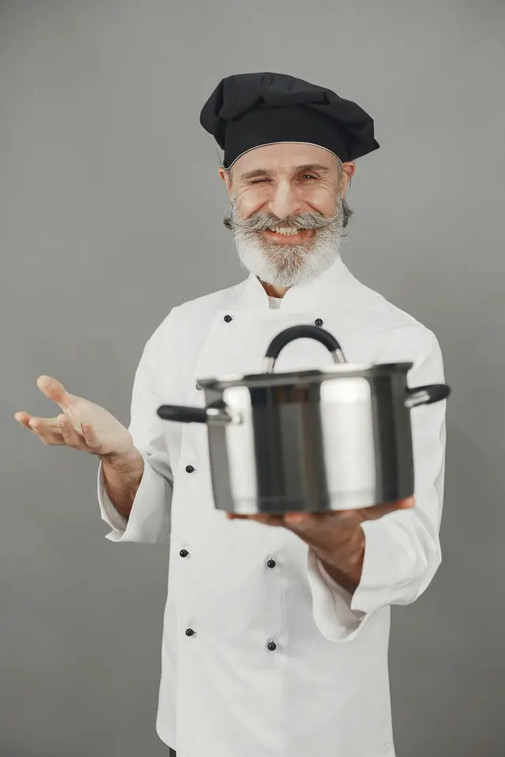

We wanted somewhere we’d actually want to spend an evening.
Blush Wine is run by Luca and Enzo — two people who love good food, good wine, and having people around the table.
What started as a simple idea has become a warm, relaxed place on the Sunshine Coast where you can settle in, order another bottle, share a few plates, and stay as long as you like.
He kept ending up at the same wine bars in Barcelona — so he built one here.
Luca grew up around long lunches that started around one and didn’t really end. After years working floors from Melbourne to Barcelona, he moved north for the water and noticed something missing: a neighbourhood wine bar where the wine was interesting, the food was honest, and nobody rushed you out the door.
So he built one. He’s the one who’ll greet you at the door, remember what you drink, and pull up a chair if it’s quiet.

A cook who doesn’t over-complicate a plate.
Luca had the room; Enzo had the hands. They met over a plate of croquetas and agreed on most of it straight away — garlic isn’t a garnish, and a paella lives or dies on its socarrat.
Enzo trained in Spanish and coastal Mediterranean kitchens. His menu changes with what’s good that week, because that’s the only way it makes sense to him.

And the person actually running the room.
Ava runs front-of-house — and she’s married to Enzo. They met years ago in a busy Barcelona kitchen, her on the floor, him on the grill, arguing about how fast the octopus should go out. They’ve been finishing each other’s service ever since.
She remembers regulars’ names and orders without being told twice, and that’s most of what makes a first visit feel like a return one.
Our philosophy.
A few things we don’t compromise on.
Nothing on the plate we wouldn’t order ourselves.
Good oil, real jamón, whatever’s fresh off the boats that week. Short menu, but everything on it we’d actually eat. Nothing pre-made — béchamel by hand, stock is ours.
We’d rather remember your name than count your visit.
The usual glass. The corner table. The birthday we clocked last year. No loyalty app does that — we just pay attention.
Old-world food, barefoot ease.
Spain taught us the rhythm — small plates, shared bottles, slow evenings. The coast gave us the setting. Serious about the food, relaxed about the rest.

How we got here.
- The ideaLuca sketches a wine bar on a napkin after one too many uninspiring nights out.
- The partnershipA plate of croquetas turns into a handshake. Enzo signs on to run the pass.
- The doors openBlush Wine opens its doors on the Sunshine Coast — thirty seats, one paella pan, big plans.
- BYO ThursdaysA quiet Thursday experiment becomes the room’s most-loved night.
- TodaySame thirty seats, same convictions — and a lot more regulars.